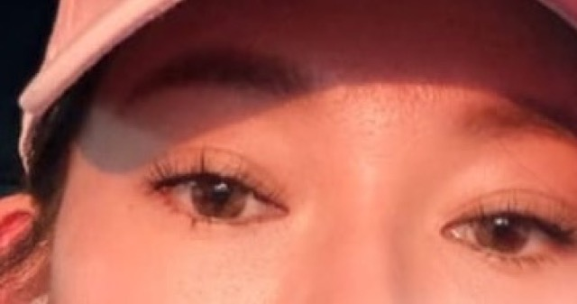
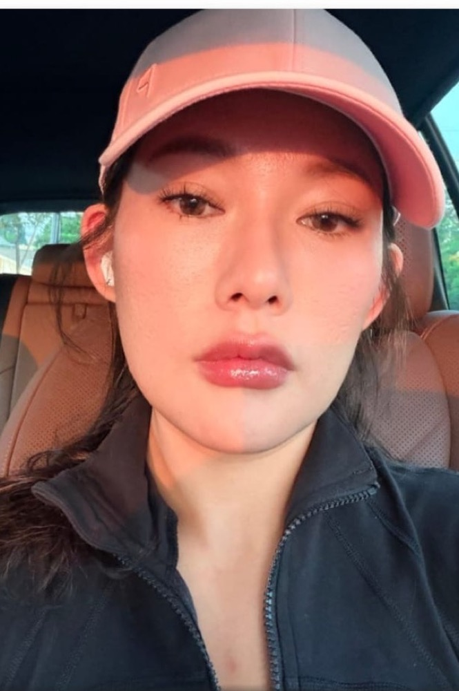
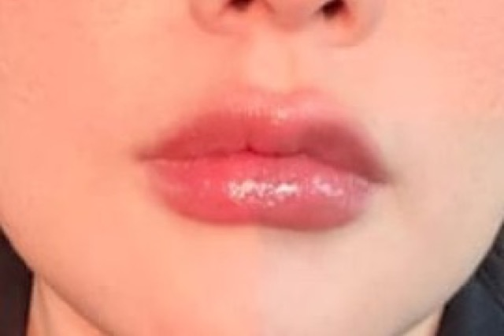
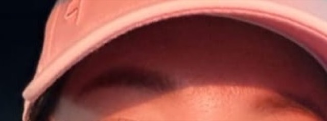

?
eyes
soft eye-contact category.
for Lynn Gam
hi haha made a tiny page from your photo because i got bored and decided to practice cropping.

pick the winning cropped feature and submit the answer.

?
?
?tap #1-#4 to build the feature ranking.
hi haha made you a tiny Lynn Gam ranking page. which cropped feature wins #1?
rank the cropped facial features, then submit for the copyable prompt.
copy this and paste to the chat.